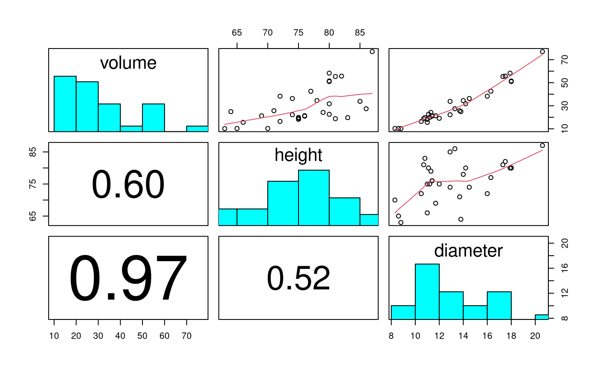
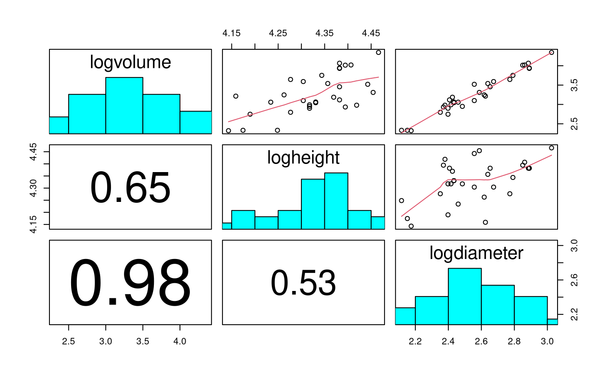
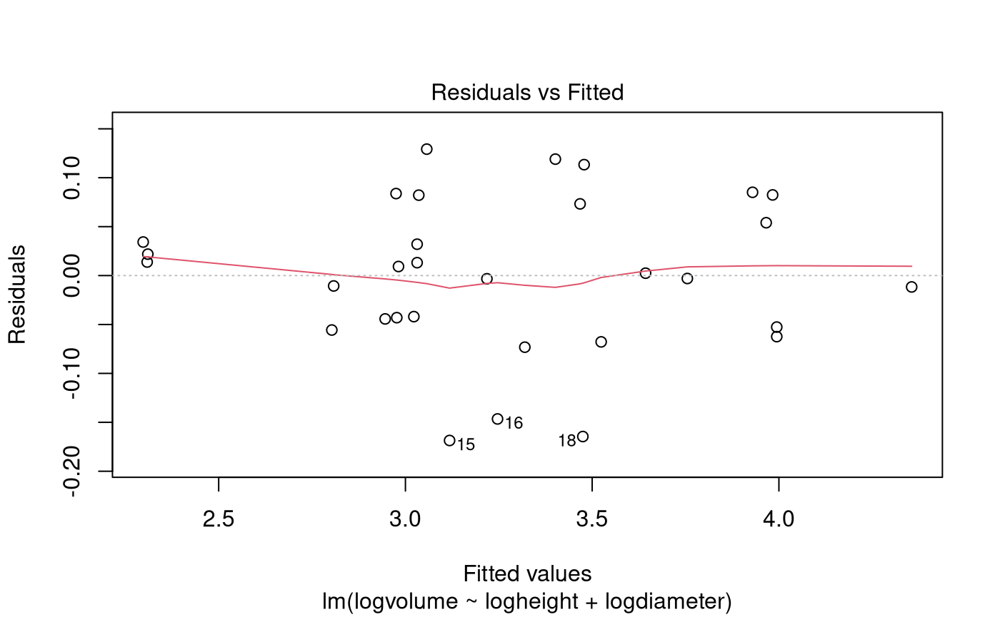
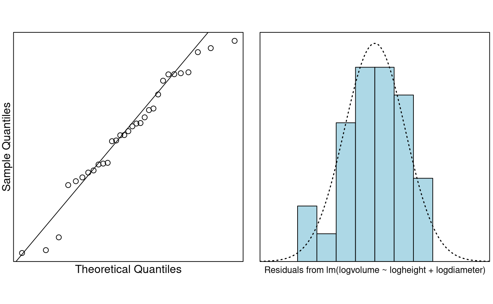

Case Study 7.1: Case Study for Chapter 7: Power law model for cherry tree volumes
Source:vignettes/articles/CS7_1.Rmd
CS7_1.RmdProblem
We want to build a model to estimate the volume of a tree from the measurement of its height and diameter. This data set provides measurements of the diameter, height and volume of timber in 31 felled black cherry trees.
The data consist of 31 observations on the following 3 variables:
-
diameter: Tree diameter in inches (measured at 4 ft 6 in above the ground). -
height: Height in feet. -
volume: Volume of timber in cubic feet.
Question of Interest
The objective is to be able to estimate the volume of the tree from the measurement of its height and diameter.
Model Justification
Using basic geometry, it can argued that volume will have a power law relationship with diameter and height. Specifically, it may be that the trunk of a tree can be reasonably approximated by a cylinder/or cone.
For a cylinder the volume is where is radius and is height.
For a cone it is .
In general, this correponds to the power law , where is diameter.
That is, .
This can be written where and .
Hence, to explore whether the above geometric argument is valid, we also need to test the hypotheses , .
Read in and Inspect the Data
Cherry.df = read.table("Cherry.txt", header = TRUE)
pairs20x(Cherry.df[, c("volume", "height", "diameter")])
Scatter in volume increases with size. Relationship between volume and height looks close to linear, and with diameter looks to be increasing in slope with size.
# Let's create some new variables in Cherry.df
Cherry.df$logvolume = log(Cherry.df$volume)
Cherry.df$logheight = log(Cherry.df$height)
Cherry.df$logdiameter = log(Cherry.df$diameter)
# Check out the new names
dimnames(Cherry.df)[[2]]## [1] "diameter" "height" "volume" "logvolume" "logheight"
## [6] "logdiameter"
Scatter in logvolume looks constant, and relationship with logheight and logdiameter looks linear.

normcheck(Cherry.fit)
cooks20x(Cherry.fit)
summary(Cherry.fit)##
## Call:
## lm(formula = logvolume ~ logheight + logdiameter, data = Cherry.df)
##
## Residuals:
## Min 1Q Median 3Q Max
## -0.168561 -0.048488 0.002431 0.063637 0.129223
##
## Coefficients:
## Estimate Std. Error t value Pr(>|t|)
## (Intercept) -6.63162 0.79979 -8.292 5.06e-09 ***
## logheight 1.11712 0.20444 5.464 7.81e-06 ***
## logdiameter 1.98265 0.07501 26.432 < 2e-16 ***
## ---
## Signif. codes: 0 '***' 0.001 '**' 0.01 '*' 0.05 '.' 0.1 ' ' 1
##
## Residual standard error: 0.08139 on 28 degrees of freedom
## Multiple R-squared: 0.9777, Adjusted R-squared: 0.9761
## F-statistic: 613.2 on 2 and 28 DF, p-value: < 2.2e-16
confint(Cherry.fit)## 2.5 % 97.5 %
## (Intercept) -8.269912 -4.993322
## logheight 0.698353 1.535894
## logdiameter 1.828998 2.136302Test the Two Requested Hypotheses
# Obtain the estimates of interest
(estimates = summary(Cherry.fit)$coeff[2:3, 1])## logheight logdiameter
## 1.117123 1.982650
# and their associated std errors
(std.errors = summary(Cherry.fit)$coeff[2:3, 2])## logheight logdiameter
## 0.20443706 0.07501061
# t-values for the two hypotheses beta1=1 and beta2=2
(tstats = (estimates - c(1, 2)) / std.errors)## logheight logdiameter
## 0.5729066 -0.2313018## logheight logdiameter
## 0.5712805 0.8187623Method and Assumption Checks
After logging the variables, the scatter plots showed the desired linear relationship between volume and the height and diameter variables, and constant scatter. So, we fitted a power law model explaining log volume with both log height and log diameter.
The underlying model assumptions appear valid with no unduly influential points.
Our final model is where .
Our power law model explained 97.8% of the total variability in (log) volume.
Executive Summary
The objective is to be able to estimate the volume of the tree from the measurement of its height and diameter. The postulated model was that cherry tree volume would follow a power law relationship with height and diameter. In particular, that volume would increase linearly with height, and with the square of diameter.
Cherry tree volume was seen to follow a power law model with respect to both height and weight, and there was no evidence that these powers differ from the hypothesized values of 1 (P-value = 0.57) and 2 (P-value = 0.82), respectively. It would appear that our geometrical arguments were valid.
We estimate that a 1% increase in height corresponds to an increase in median volume of between 0.70% and 1.54%, and a 1% increase in diameter corresponds to an increase in median volume of between 1.83% and 2.14%.
Addendum (not examinable)
If you believe (and we have no reason not to) that the underlying relationship is indeed that then the only term to be estimated is . This is how you’d estimate it:
# Intercept only model.
fit.beta0 = lm(I(logvolume - logheight - 2 * logdiameter) ~ 1, data = Cherry.df)
# beta0 changes from -6.63 to -6.17
summary(fit.beta0)##
## Call:
## lm(formula = I(logvolume - logheight - 2 * logdiameter) ~ 1,
## data = Cherry.df)
##
## Residuals:
## Min 1Q Median 3Q Max
## -0.168446 -0.047355 -0.003518 0.066308 0.136467
##
## Coefficients:
## Estimate Std. Error t value Pr(>|t|)
## (Intercept) -6.16917 0.01421 -434.3 <2e-16 ***
## ---
## Signif. codes: 0 '***' 0.001 '**' 0.01 '*' 0.05 '.' 0.1 ' ' 1
##
## Residual standard error: 0.0791 on 30 degrees of freedom